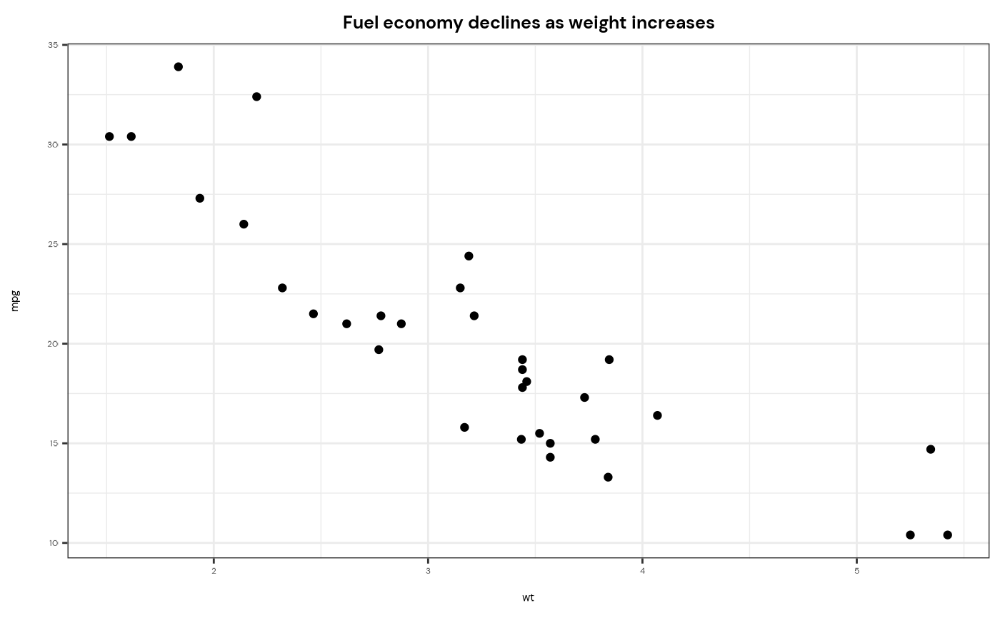

R/theme_trace.R
theme_trace.RdA custom ggplot2 theme for Epiverse-TRACE packages and projects
theme_trace()library(ggplot2)
showtext::showtext_auto()
ggplot(mtcars, aes(wt, mpg)) +
geom_point() +
labs(title = "Fuel economy declines as weight increases") +
theme_trace()
